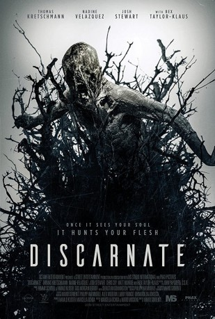
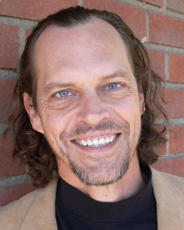

#10133 Shapeshifter
Alternativ: Discarnate (Englischer Titel)
 
 IMDB-Wertung: 4.8 / 10
IMDB-Wertung: 4.8 / 10  Metascore: 0
Metascore: 0 
Nach dem tragischen Tod seiner Familie, entwickelt der Neurowissenschaftler Dr. Andre Mason ein bewusstseinserweiterndes Serum, das den Kontakt mit dem Totenreich ermöglichen soll. In einer abgelegenen Villa injiziert er sich und seinem Wissenschaftler-Team die Droge. Das Serum beginnt zu wirken und erlaubt ihnen mit übernatürlichen Erscheinungen zu interagieren. Doch mit ihrem Experiment haben sie auch die Aufmerksamkeit von weit dunkleren Wesen auf sich gezogen - sogenannten Formwandlern. Andre muss sich entscheiden: entweder für seine tote Familie oder sein Team, das ohne seine Hilfe diesem Experiment nicht lebend entkommen wird.
Jahr: 2018
Dauer: 87 Minuten
FSK: 16
Land: USA Studio: Uncork'd EntertainmentTonspuren: DTS - ,
Untertitel:
Auflösung: 1080p (1920x816) Größe: 5928 MB
Genre: Thriller, Horror
Regisseur: Mario Sorrenti
Drehbuch: Mario Miscione, Marcella Ochoa
Soundtrack: Harald Kloser, Thomas Schobel
Darsteller:
 Thomas Kretschmann als Dr. Andre Mason
Thomas Kretschmann als Dr. Andre Mason- Isiah Adams als Teen Ghost
- Ashton Amaba als Demon
- Cassandra Clark als Rebecca Mason
 Chris Coy als Travis Sherman
Chris Coy als Travis Sherman- Olivier De Sagazan als Discarnate Entity
-  Josh Harp als Ghoul
- Mick Ignis als Creature Double
- Matt Munroe als Shane Sherman
 Josh Stewart als Casey Blackburn
Josh Stewart als Casey Blackburn Bex Taylor-Klaus als Violette Paich
Bex Taylor-Klaus als Violette Paich- Jake Vaughn als Benny Mason
- Nadine Velazquez als Maya Sanchez
- Aeslin Audri als Eva
- Nelli Jimenez als Isabel
Datei: X:\2018(N-Z)\Shapeshifter (2018, FSK16, 1920x816).mkv seit 11.12.2018
Festplatte: HD 2018(G-Z)-2019(A-Z)
 Es gibt insgesamt 172 Filme in der Gruppe '2018(N-Z)'
Es gibt insgesamt 172 Filme in der Gruppe '2018(N-Z)'